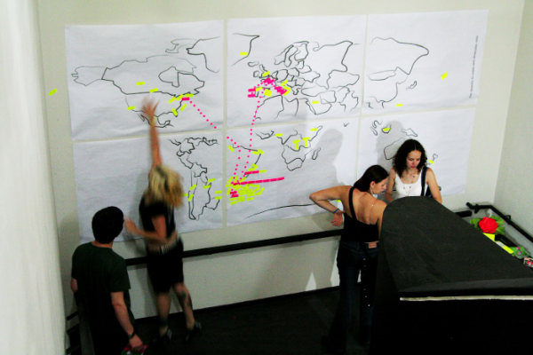
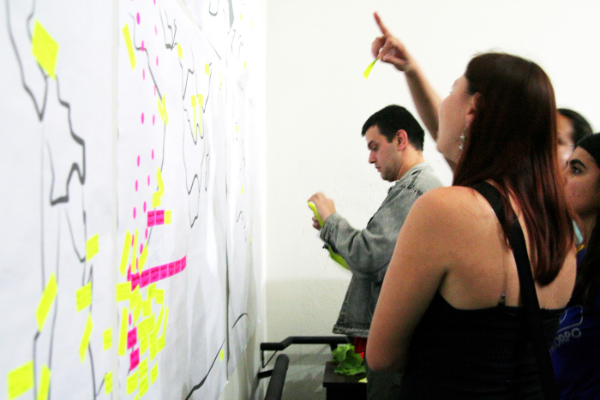
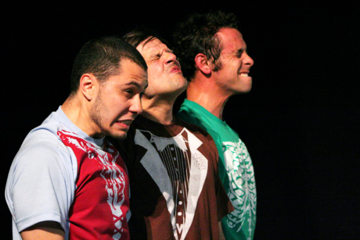
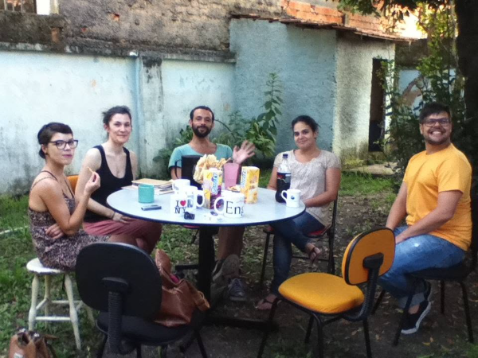
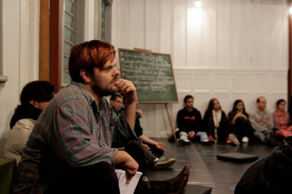
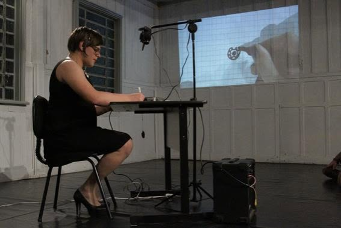

Couve-Flor
Couve-Flor Tronco e Membros
2006


Abertura do projeto Couve-Flor Tronco e Membros. 2011, foto de Alessandra Haro.

Na dúvida é tudo mentira. Espetáculo de dança, parte do projeto Tronco e membros. Foto de Alessandra Haro. Em cena Neto Machado, Gustavo Bitencourt e Princesa Ricardo Marinelli.
Couve-Flor Manutenção Coletiva
2010–2012

Residência com a coreógrafa alemã Litó Walkey, no Cafofo Couve-Flor. 2011

Encontro no Cafofo Couve-Flor com a coreógrafa Litó Walkey.

A ordem das coisas {remix}. Solo de Gustavo Bitencourt/Dalvinha Brandão. Cafofo Couve-Flor, 2011. Foto de Alessandra Haro. Coreografia para papel, caneta e teclado.
Na dúvida é tudo mentira
Trio com Gustavo Bitencourt, Princesa Ricardo Marinelli e Neto Machado. Estreia no Teatro Reikrauss Benemond, Curitiba.
21